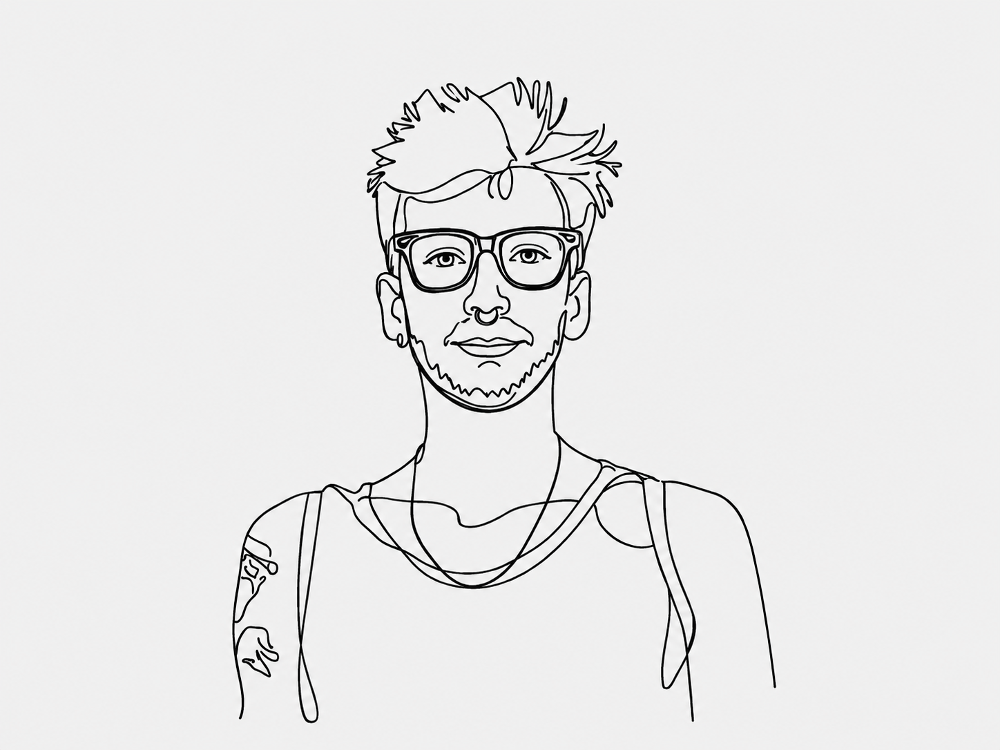

Forschung
Praxisnahe Forschung zu Antisemitismus, Medien, Männlichkeiten, digitalem Kapitalismus und pädagogischer Urteilskraft.
Pädagoge und Bildungswissenschafter. Forschung, Lehre und Entwicklung reflexiver Bildungsformate zu Medien, Migration, Männlichkeiten und gesellschaftlichen Machtverhältnissen.
Educator and educational scientist. Research, teaching, and the development of reflexive educational formats addressing media, migration, masculinities, and social power relations.

Profil
Meine Arbeit verbindet Medien- und Migrationspädagogik mit kritischer Bildungswissenschaft.
Sie untersucht, wie Antisemitismus, Rassismus, Männlichkeiten und digitaler Kapitalismus pädagogische Situationen und Institutionen prägen – und wie sie in reflexiver Bildungsarbeit bearbeitet werden können.
Profile
My work brings together media education, migration pedagogy, and critical educational research.
It examines how antisemitism, racism, masculinities, and digital capitalism shape educational settings and institutions – and how they can be addressed through reflexive educational practice.
Arbeitsfelder
Praxisnahe Forschung zu Antisemitismus, Medien, Männlichkeiten, digitalem Kapitalismus und pädagogischer Urteilskraft.
Medienpädagogik, Migrationspädagogik, digitale Kompetenzen und kritische Bildungsarbeit in Hochschule und Erwachsenenbildung.
Workshops, Fortbildungen, Prozessbegleitung, Bildungsmaterialien und offene Bildungsressourcen.
Konzeption und Aufbau von Forschungsbereichen, Kooperationen und politisch-pädagogischen Projekten.
Areas of work
Practice-based research on antisemitism, media, masculinities, digital capitalism, and educational judgement.
Media education, migration pedagogy, digital competences, and critical education in higher and adult education.
Workshops, professional development, process facilitation, educational materials, and open educational resources.
Designing and developing research areas, collaborations, and political-educational projects.
Aktuelle Projekte
Current projects
Aktuelle Stationen
Current positions
Mitgliedschaften und Netzwerke
Memberships and networks